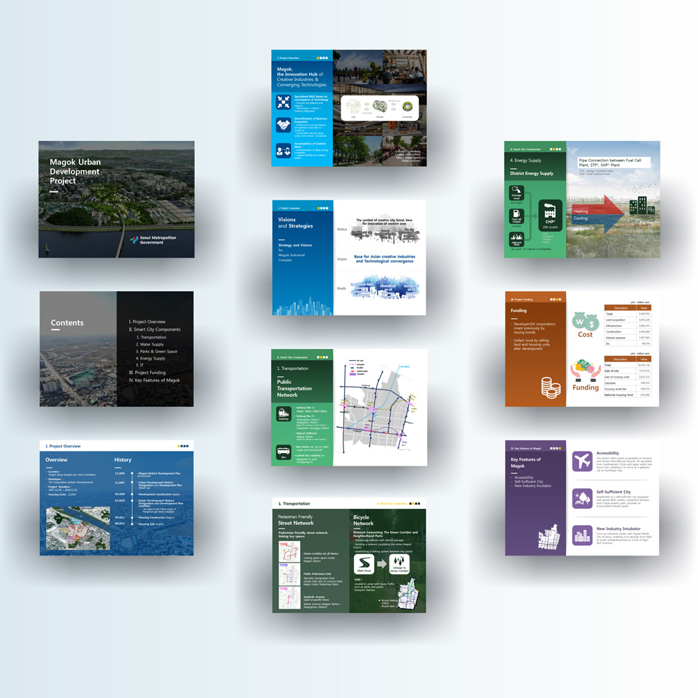
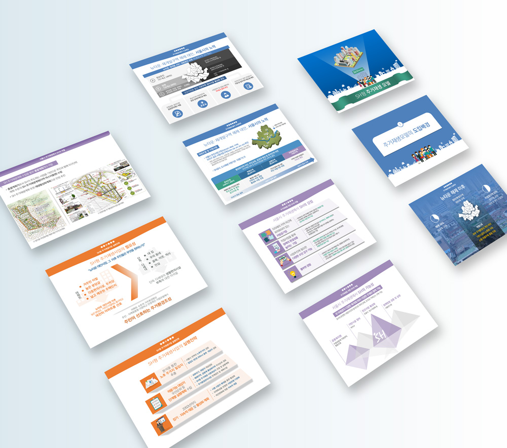

<div class="workWrap">
    <h1>제안서</h1>
    <ol class="workOl">
        <li><span class="tit">작업영역</span><br>제안서</li>
        <li><span class="tit">사용프로그램</span><br>Photoshop, Illustrator, MS Powerpoint, MS Word</li>
        <li><span class="tit">사이트</span><br><a href="https://www.notion.so/look212/3562d197e86844659f66ca65efe87b84" target="_blank">제안서-Notion</a></li>
    </ol>
    <div class="introduce">
        <span class="tit">Introduce</span>
        <p>서울시청, 농촌진흥청, SH공사 제안서 작업 경험 다수.<br>기초 사업 기획서를 토대로 제안서, 발표자료, 투자 설명서를 재디자인합니다.</p>
    </div>
    <div class="workInimg">
        <div>
            <span class="tit type2">SH공사 투자설명서</span>
            <a href="https://www.notion.so/look212/3562d197e86844659f66ca65efe87b84" target="_blank"></a>
        </div>
        <div>
            <span class="tit type2">SH공사 법무팀 발표자료</span>
            <a href="https://www.notion.so/look212/3562d197e86844659f66ca65efe87b84" target="_blank"></a>
        </div>
        <div>
            <span class="tit type2">SH공사 사업 소개자료</span>
            <a href="https://www.notion.so/look212/3562d197e86844659f66ca65efe87b84" target="_blank"></a>
        </div>
    </div>
</div>
